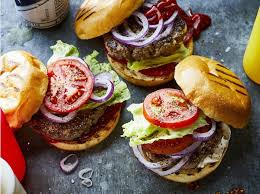
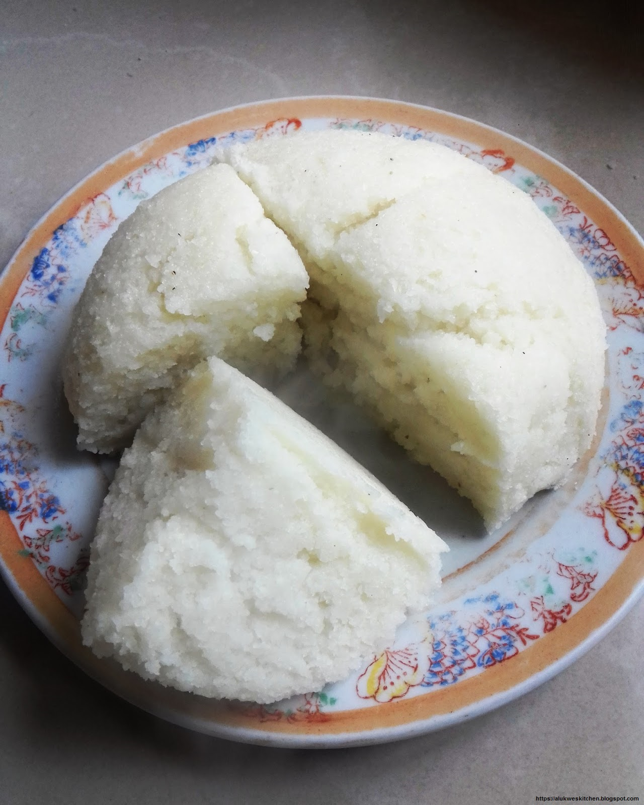
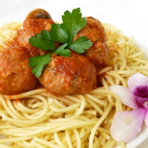

BURGER

INGREDIENTS
1 egg
1/2 teaspoon salt
1/2 teaspoon ground black pepper
1 pound ground beef
1/2 cup fine dry bread crumbs
PROCEDURE
Preheat an outdoor grill for high heat and lightly oil grate.
In a medium bowl, whisk together egg, salt and pepper.
Place ground beef and bread crumbs into the mixture. With hands or a fork, mix until well blended.
Form into 4 patties approximately 3/4 inch thick.
Place patties on the prepared grill.
Cover and cook 6 to 8 minutes per side, or to desired doneness.

UGALI

INGREDIENTS
4 cups finely ground cornmeal
8 cups water
PROCEDURE
Heat water to boiling in a saucepan.
Slowly pour the corn flour into boiling water.
Avoid forming lumps.
Stir continuously and mash any lumps that do form.
Add more corn flour until it is thicker than mashed potatoes.
Cook for three or four minutes, continue to stir. (Continuing to stir as the ugali thickens is the secret to success, i.e., lump-free ugali.)
Top with a pat of butter or margarine, if desired.
Cover and keep warm.
Serve immediately with any meat or vegetable stew, or any dish with a sauce or gravy.
SPAGHETTI

INGREDIENTS
3 tablespoons olive oil
3/4 cup chopped onion
4 cloves garlic, minced
2 (16 ounce) cans crushed tomatoes
3 (6 ounce) cans tomato paste1 cup water
1/2 cup sugar
1/4 cup chopped fresh oregano, divided
1 dried bay leafsalt and pepper to taste
1 pound ground round
1/2 cup Italian seasoned bread crumbs
1/4 cup chopped fresh parsley
2 eggs, lightly beaten
1/2 cup grated Parmesan cheese
1 (16 ounce) package uncooked spaghetti
PROCEDURE
Heat the olive oil in a large saucepan over medium heat, and cook the onion until lightly brown.
Mix in 2 cloves garlic, and cook 1 minute.
Stir in crushed tomatoes, tomato paste, water, sugar, 1/2 the oregano, and bay leaf.
Season with salt and pepper.
Bring to a boil, reduce heat to low, and simmer while preparing meatballs.
In a bowl, mix the ground round, bread crumbs, remaining oregano, remaining garlic, parsley, eggs, and cheese.
Season with salt and pepper.
Roll into 1 inch balls, and drop into the sauce.
Cook 40 minutes in the sauce, or until internal temperature of meatballs reaches a minimum of 160 degrees F (72 degrees C).
Bring a large pot of lightly salted water to a boil, and stir in the spaghetti.
Cook 8 to 10 minutes, until al dente, and drain.
Serve the meatballs and sauce over the cooked spaghetti.